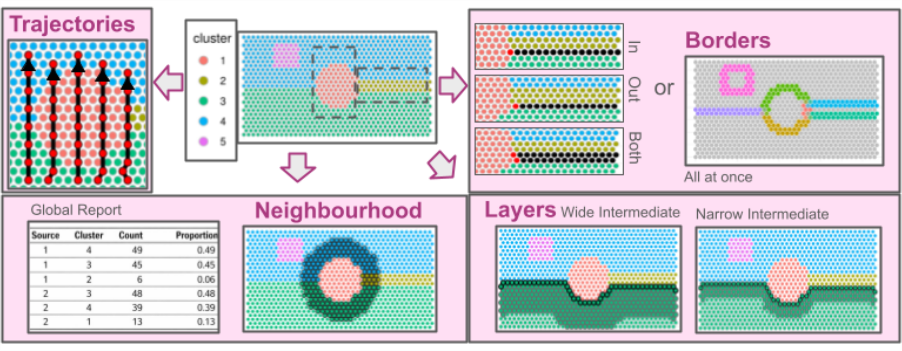

Overview
Battlefield is a Swiss-army toolkit designed to define and extract spatial spots from specific regions in spatial transcriptomics data. It provides low-level, modular utilities to delineate spatial regions of interest,
including interfaces between clusters, intra-cluster layers, and
inter-cluster trajectories. These utilities are intended to be reused and composed within higher-level
analytical workflows and packages. Battlefield supports sequencing-based spatial transcriptomics platforms such as
10x Genomics Visium, across multiple resolutions, including
Visium HD (binned).

Battlefield provides four core functionalities to define and extract spatial transcriptomics spots from specific tissue regions, enabling the study of spatial organization under different biological contexts:
Interfaces between clusters — identify and analyze boundary regions where distinct tissue or cell populations interact.
Intra-cluster layers — characterize spatial layers or gradients within a single cluster.
Inter-cluster trajectories — model spatial transitions across multiple clusters.
Cluster neighbourhood — report the cluster composition of a spatial neighborhood defined by k nearest spots, constrained by a distance threshold.
It can be integrated upstream to support insightful ligand–receptor analyses, using BulkSignalR, available from Bioconductor here.
Data summary functions are proposed to help defining spatial regions of interest on the top of previously defined clusters.
Installation
# Battlefield directly from Bioconductor.
if (!require("BiocManager", quietly = TRUE))
install.packages("BiocManager")
BiocManager::install("Battlefield")
# or development version via GitHub:
# install.packages("devtools")
devtools::install_github("ZheFrench/Battlefield",build_vignettes = TRUE)
# To read the vignette
# browseVignettes("Battlefield")Changes
Major changes are reported in the NEWS file, make sure to check it out if you want to follow the latest developments.
Issues and bug reports
Please use https://github.com/ZheFrench/Battlefield/issues to submit issues, bug reports, and comments.
Battlefield has been successfully installed on Mac OS X, Linux, and Windows using R version 4.5.
The code in this repository is published with the CeCILL License.